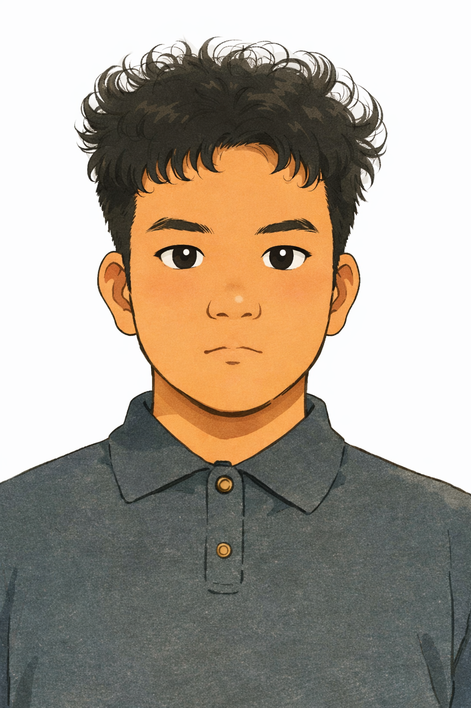

Development Timeline Click to expand
- 2023Entered Shenzhen Technology University (Data Science & Big Data Technology).
- 2024Joined the Tsinghua–Shenzhen X-Institute Tsien Excellence Engineering Program (TEEP).
- 2025Accepted papers: ICCAS 2025, ROBIO 2025, ICIA 2025, RAAI 2025.
- 2025ASME Student Mechanism & Robot Design Competition — Gold Medal (1st Place).


About Me
I am an undergraduate in Data Science and Big Data Technology at Shenzhen Technology University. Concurrently, as a student in the Tsien Excellence Engineering Program (TEEP) conducted via Shenzhen X-Institute, I am engaged in robotic gripper research focusing on underactuated mechanisms and linkage-based designs for constrained-space manipulation. My goal is to develop efficient and adaptive robotic systems for real-world tasks.
Education
- Shenzhen Technology University — B.Sc. in Data Science and Big Data Technology (2023–2027) [Official]
- Tsinghua University – Shenzhen X-Institute — Tsien Excellence Engineering Program (TEEP) (2024–Present) [Official]
Publications
- Qu S., Zhang W. Gamma Gripper: An Underactuated Environment-Adaptive Robotic Gripper Based on Scott-Russell Mechanism for Thin Object Manipulation. ICCAS 2025. (Accepted) [ PDF] [ Video]
- Qu S., Zhang W., Zhang C. Adaptive Grasp with Scott-Russell Linkages... ROBIO 2025. (Accepted) [ PDF (TBD)] [ Project (TBD)]
- Qu S., Zhang W. Gamma-X Gripper... ICIA 2025. (Accepted) [ PDF (TBD)] [ Project (TBD)]
- Qu S., Zhang W., Zhang C. TPL-Lambda Tendon Gripper: A Tendon-Driven Gripper with Pinching and Lifting Capability Based on Scott Mechanism. RAAI 2025. (Accepted) [ PDF] [ Video]
Research & Projects
-
Underactuated Robotic Gripper Research (Gamma, TPL Series)
Designs for thin-object grasping, constrained-space manipulation, scooping, pinching, enveloping actions. -
Multi-Agent Node Cluster Optimization
RL-based optimization of WAN routing and topology robustness.
Honors & Awards
- ASME Student Mechanism & Robot Design Competition — Gold Medal, First Place Internationally (2025) [Competition] [Finalists]
Skills
- Python, C/C++, MATLAB
- SolidWorks, Arduino, Linux, VS Code, Docker
- Chinese (Native), English (Fluent), Japanese (Proficient)
Public Outreach
- Research communication on Xiaohongshu .